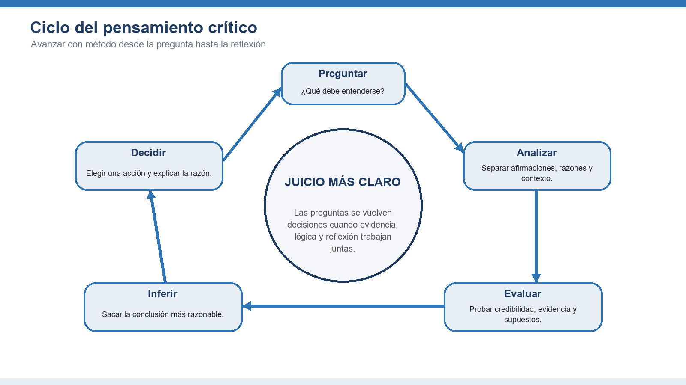
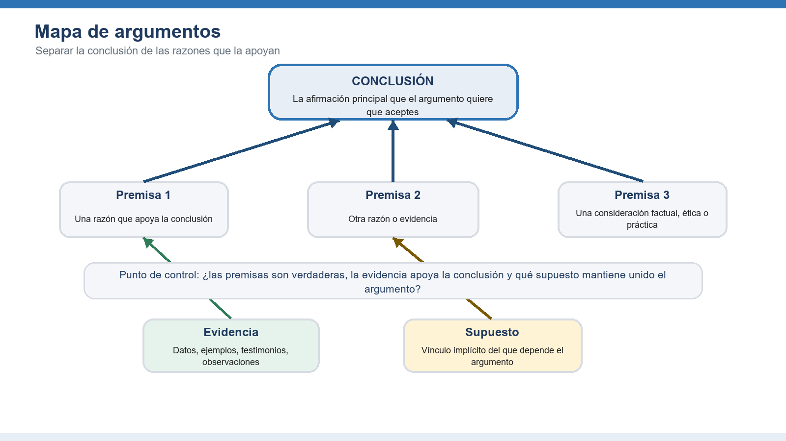
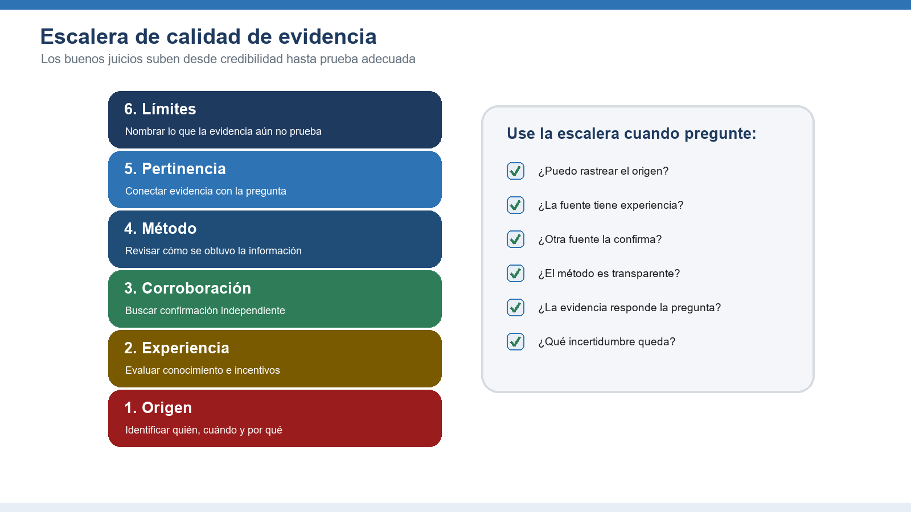
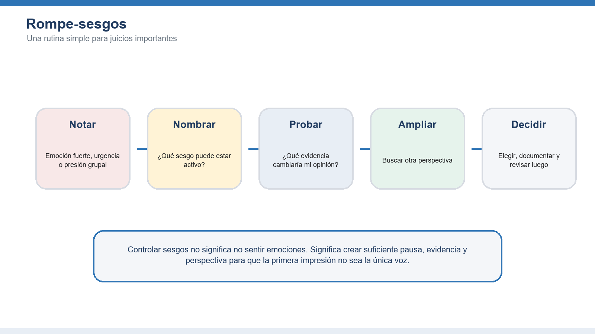
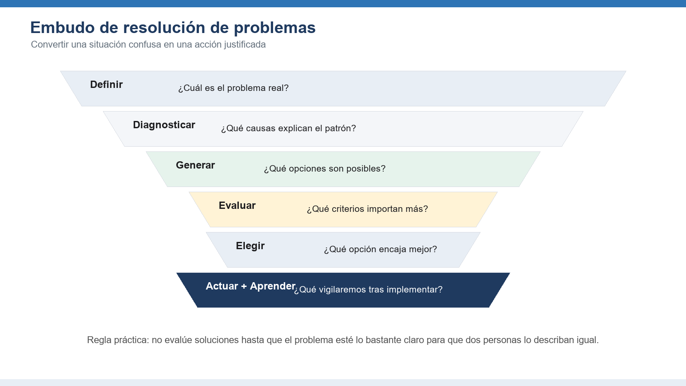
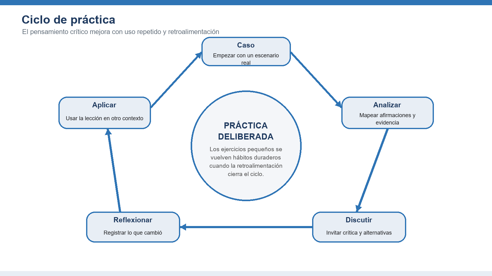

🧠 Pensamiento crítico
Analizar, evaluar y decidir con confianza
Este documento complementario desarrolla el esquema original de la habilidad de pensamiento crítico en una guía práctica de aprendizaje con explicaciones, ejemplos, diagramas, ejercicios y preguntas de reflexión.
Comience con la mentalidad del pensamiento crítico; luego aprenda a analizar argumentos, evaluar evidencia, controlar sesgos, resolver problemas y practicar la habilidad de manera repetida hasta convertirla en hábito.
1. Fundamentos del pensamiento crítico
Construir la mentalidad y el vocabulario que los estudiantes necesitan antes de evaluar información compleja.

Áreas clave para dominar
Definición e importancia
El pensamiento crítico es juicio disciplinado. Combina curiosidad, estándares claros, evidencia, lógica y humildad intelectual para decidir qué creer o qué hacer. Su valor es práctico: ayuda a evitar juicios apresurados, explicar las razones y tomar mejores decisiones cuando la información está incompleta o en disputa.
Malentendidos comunes
El pensamiento crítico no es negatividad, debate por debatir ni desconfianza hacia todas las fuentes. Una persona que piensa bien puede ser escéptica sin ser cínica, abierta sin ser crédula y decidida sin fingir más certeza de la que permite la evidencia.
Beneficios personales y profesionales
En la vida diaria, el pensamiento crítico apoya mejores decisiones financieras, relaciones más saludables y una interpretación más cuidadosa de los medios. En el trabajo mejora la planificación, la evaluación de riesgos, el diagnóstico de problemas, la colaboración y la comunicación porque las decisiones pueden rastrearse hasta sus razones.
La mentalidad del pensamiento crítico
La mentalidad incluye curiosidad, paciencia, imparcialidad, valentía y disposición a revisar una opinión. Los estudiantes practican preguntas como: ¿Qué sé? ¿Cómo lo sé? ¿Qué estoy suponiendo? ¿Qué notaría una persona razonable que no está de acuerdo conmigo?
Errores comunes que debe vigilar
- Confundir confianza con prueba
- Pasar a soluciones antes de aclarar la pregunta
- Confundir crítica con evaluación cuidadosa
Tareas prácticas
- Escriba una creencia que defienda con fuerza y enumere la evidencia que la respalda.
- Identifique un supuesto detrás de esa creencia y una evidencia que podría desafiarla.
- Explique la diferencia entre ser escéptico y ser despectivo.
💬 Discusión — Módulo 1
¿Una pregunta, un ejemplo real, un desacuerdo sobre este módulo? Compártelo aquí, con respeto.
Regla de la comunidad : critica las ideas, nunca a las personas. Cita tus fuentes.
2. Identificar y analizar argumentos
Enseñar a los estudiantes a ver la estructura que se encuentra debajo del lenguaje persuasivo.

Áreas clave para dominar
Premisas y conclusiones
Un argumento tiene una conclusión, que es la afirmación que intenta que aceptemos, y premisas, que son las razones ofrecidas para respaldarla. Los estudiantes deben reconocer palabras señal como porque, por lo tanto, ya que y como resultado, pero también detectar argumentos cuando esas señales no aparecen.
Falacias lógicas
Las falacias son patrones de razonamiento débil. Incluyen ataques ad hominem, hombre de paja, falso dilema, generalización apresurada, pendiente resbaladiza y apelación a una autoridad irrelevante. Nombrar una falacia solo ayuda cuando el estudiante puede explicar cómo falla el razonamiento.
Evaluación de argumentos
Una evaluación útil pregunta: ¿Son aceptables las premisas? ¿Apoyan la conclusión? ¿Hay supuestos ocultos o contraejemplos? Esto separa la fuerza emocional de un mensaje de la calidad de su razonamiento.
Razonamiento deductivo e inductivo
El razonamiento deductivo busca certeza cuando las premisas son verdaderas y la forma es válida. El razonamiento inductivo busca probabilidad, patrón o mejor explicación. La mayoría de las decisiones reales usan inducción, por lo que los estudiantes deben juzgar la fuerza, no solo la corrección.
Errores comunes que debe vigilar
- Responder al tono en lugar de a la estructura
- Rechazar una conclusión porque una premisa menor es débil
- Suponer que toda frase persuasiva es un argumento
Tareas prácticas
- Elija un breve artículo de opinión y subraye la conclusión principal.
- Enumere cada premisa con sus propias palabras y trace la conexión entre razones y conclusión.
- Identifique una objeción posible y decida si el argumento todavía se sostiene.
💬 Discusión — Módulo 2
¿Una pregunta, un ejemplo real, un desacuerdo sobre este módulo? Compártelo aquí, con respeto.
Regla de la comunidad : critica las ideas, nunca a las personas. Cita tus fuentes.
3. Evaluar evidencia y fuentes
Ayudar a los estudiantes a decidir cuánto merece confiarse en una afirmación.

Áreas clave para dominar
Evaluación de fuentes
Una fuente debe evaluarse por autoridad, exactitud, propósito, actualidad y transparencia. Los estudiantes deben preguntar quién creó la información, qué experiencia tiene, qué incentivos existen, si la afirmación puede rastrearse y si la fuente separa hechos de interpretación.
Reconocimiento de sesgos
Todas las fuentes tienen perspectivas, prioridades y límites. El sesgo no vuelve inútil a una fuente automáticamente, pero afecta el peso que se le debe dar. La clave es identificar la dirección, el grado y la pertinencia del sesgo.
Calidad de la evidencia
La evidencia sólida es pertinente, suficiente, exacta, representativa y obtenida mediante un método confiable. Un ejemplo vívido puede aclarar un punto, pero no debe tratarse como prueba de un patrón general sin apoyo más amplio.
Fuentes primarias y secundarias
Las fuentes primarias ofrecen evidencia directa, como datos originales, entrevistas, registros u observaciones. Las fuentes secundarias interpretan o resumen materiales primarios. Los estudiantes hábiles usan ambas, pero saben cuándo verificar una interpretación contra la evidencia original.
Errores comunes que debe vigilar
- Confiar más en una presentación pulida que en métodos transparentes
- Usar información vieja para una pregunta que cambia rápido
- Tratar un solo ejemplo como un patrón
Tareas prácticas
- Compare dos fuentes que hacen la misma afirmación y anote dónde coinciden o difieren.
- Rastree una estadística hasta su fuente original.
- Clasifique una evidencia como fuerte, moderada, débil o insuficiente y explique por qué.
💬 Discusión — Módulo 3
¿Una pregunta, un ejemplo real, un desacuerdo sobre este módulo? Compártelo aquí, con respeto.
Regla de la comunidad : critica las ideas, nunca a las personas. Cita tus fuentes.
4. Reconocer y superar sesgos
Dar a los estudiantes herramientas prácticas para reducir errores previsibles de juicio.

Áreas clave para dominar
Sesgos cognitivos
Los sesgos cognitivos son atajos mentales que pueden ayudar en situaciones rutinarias, pero pueden engañar cuando hay mucho en juego, complejidad o incertidumbre. Influyen en lo que notamos, recordamos, creemos e ignoramos.
Sesgo de confirmación
El sesgo de confirmación es la tendencia a buscar, interpretar y recordar información que respalda lo que ya creemos. Es poderoso porque puede parecer investigación cuidadosa mientras filtra en silencio la evidencia contraria.
Estrategias de mitigación
El sesgo se reduce con rutinas, no solo con fuerza de voluntad. Las estrategias útiles incluyen desacelerar, nombrar el posible sesgo, buscar evidencia contraria, usar listas de verificación, comparar tasas base, invitar al desacuerdo y documentar la razón de una decisión antes de conocer los resultados.
Toma de perspectiva
La toma de perspectiva consiste en ver una situación desde las metas, restricciones e información de otra persona. No requiere estar de acuerdo; mejora la precisión y la imparcialidad del análisis.
Errores comunes que debe vigilar
- Suponer que los sesgos solo afectan a otras personas
- Usar una sola fuente contraria y dar por terminada la búsqueda
- Confundir incomodidad con mala evidencia
Tareas prácticas
- Describa una decisión reciente e identifique qué sesgo pudo influir en ella.
- Encuentre una fuente creíble que cuestione su primera opinión.
- Defienda la postura opuesta durante tres minutos antes de volver a la propia.
💬 Discusión — Módulo 4
¿Una pregunta, un ejemplo real, un desacuerdo sobre este módulo? Compártelo aquí, con respeto.
Regla de la comunidad : critica las ideas, nunca a las personas. Cita tus fuentes.
5. Resolver problemas con pensamiento crítico
Aplicar análisis, evidencia y razonamiento a problemas reales y complejos.

Áreas clave para dominar
Definición del problema
Un enunciado de problema debe nombrar la brecha entre el estado actual y el estado deseado, identificar a quién afecta y describir la evidencia de que el problema existe. Un enunciado débil salta directamente a una solución preferida.
Evaluación de soluciones
Las soluciones deben compararse con criterios explícitos como impacto, viabilidad, costo, riesgo, equidad, reversibilidad y tiempo. Los estudiantes deben evitar elegir la primera opción funcional cuando no se han considerado alternativas mejores.
Marcos de decisión
Los marcos como matrices de decisión, análisis costo-beneficio, listas de pros y contras, herramientas de causa raíz y premortems hacen visible el razonamiento. El objetivo no es mecanizar las decisiones, sino exponer los intercambios para discutirlos.
Análisis de causa raíz
El análisis de causa raíz mira por debajo de los síntomas visibles. Técnicas como los cinco porqués, diagramas de causa y efecto y mapas de proceso ayudan a distinguir un detonante de la condición profunda que permite que el problema continúe.
Errores comunes que debe vigilar
- Resolver el síntoma en lugar de la causa
- Elegir criterios después de seleccionar la opción preferida
- Ignorar la implementación y el seguimiento
Tareas prácticas
- Reescriba un problema vago como una brecha precisa entre estado actual y estado deseado.
- Genere al menos tres soluciones posibles antes de evaluar cualquiera.
- Use tres criterios para comparar opciones y explicar el intercambio de su recomendación final.
💬 Discusión — Módulo 5
¿Una pregunta, un ejemplo real, un desacuerdo sobre este módulo? Compártelo aquí, con respeto.
Regla de la comunidad : critica las ideas, nunca a las personas. Cita tus fuentes.
6. Practicar el pensamiento crítico
Convertir los conceptos en hábitos duraderos mediante ejercicios, retroalimentación y reflexión.

Áreas clave para dominar
Estudios de caso
Los estudios de caso permiten practicar con ambigüedad realista. Un buen caso incluye información incompleta, valores en competencia, presión de tiempo y consecuencias. Los estudiantes deben identificar hechos, incertidumbres, partes interesadas, supuestos y opciones de decisión.
Ejercicios prácticos
Los ejercicios deben ser lo bastante breves para repetirse y lo bastante específicos para generar retroalimentación. Incluyen mapas de argumentos, clasificación de fuentes, detección de falacias, diarios de sesgos, matrices de decisión y revisiones posteriores a la acción.
Aplicaciones reales
El pensamiento crítico se vuelve valioso cuando los estudiantes lo usan fuera del aula: evaluar noticias, preparar una propuesta, resolver un problema laboral, interpretar datos o tomar una decisión personal con consecuencias a largo plazo.
Mejora continua
El crecimiento de la habilidad requiere reflexión. Los estudiantes deben comparar predicciones con resultados, registrar lecciones aprendidas, pedir crítica y crear listas de verificación personales para decisiones recurrentes.
Errores comunes que debe vigilar
- Practicar solo definiciones abstractas
- Evitar la retroalimentación porque la crítica se siente personal
- No transferir la habilidad a situaciones reales
Tareas prácticas
- Mantenga durante una semana un diario de decisiones con afirmación, evidencia, supuesto, decisión y resultado.
- Realice una breve revisión entre pares donde otra persona desafíe su razonamiento, no su carácter.
- Elija un hábito de pensamiento crítico para practicar diariamente durante el próximo mes.
💬 Discusión — Módulo 6
¿Una pregunta, un ejemplo real, un desacuerdo sobre este módulo? Compártelo aquí, con respeto.
Regla de la comunidad : critica las ideas, nunca a las personas. Cita tus fuentes.
Ejercicios prácticos finales
Estos ejercicios integran los seis módulos y pueden usarse como tareas, actividades de taller o revisión final del tutorial.
Análisis de argumentos
Seleccione un breve artículo, discurso, anuncio o propuesta de trabajo. Identifique la conclusión, enumere las premisas, marque los supuestos y evalúe si la evidencia justifica la conclusión.
Evaluación de fuentes
Elija una afirmación actual y compare al menos tres fuentes. Clasifique cada fuente por autoridad, transparencia, calidad de evidencia y pertinencia para la pregunta.
Identificación de sesgos
Revise una decisión personal o de equipo. Identifique dónde el sesgo de confirmación, el anclaje, la disponibilidad o la presión grupal pudieron influir en el resultado.
Desafío de resolución de problemas
Use el embudo de resolución de problemas para definir un problema real, diagnosticar causas probables, generar opciones, compararlas con criterios explícitos y recomendar una acción.
Rúbrica de desempeño del estudiante
Use la rúbrica para dar retroalimentación sobre el proceso de razonamiento, no solo sobre si el estudiante coincide con la conclusión del instructor.
Referencias y recursos
- Foundation for Critical Thinking - www.criticalthinking.org
- Bloom's Taxonomy of Critical Thinking Skills
- Paul, R., and Elder, L. (2008). The Miniature Guide to Critical Thinking Concepts and Tools.
- Facione, P. A. (2015). Critical Thinking: What It Is and Why It Counts.
- Brookfield, S. D., and Preskill, S. (2005). Discussion as a Way of Teaching.
- Nota de derechos de autor: Esta guía traducida fue preparada como documento complementario del tutorial de pensamiento crítico de Lojik360 University.